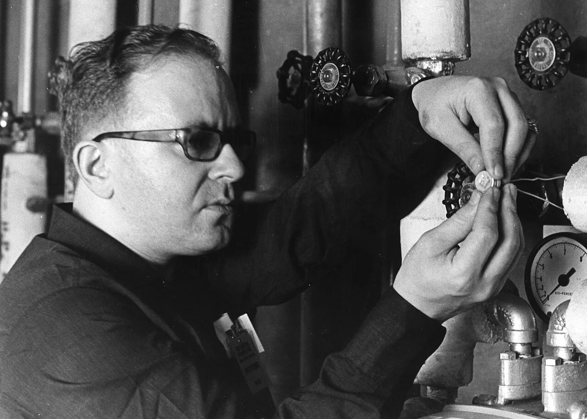
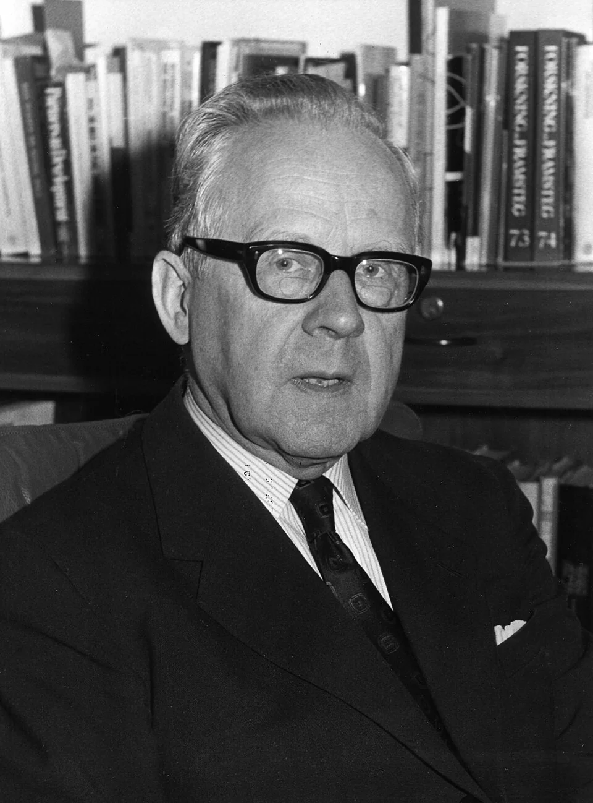
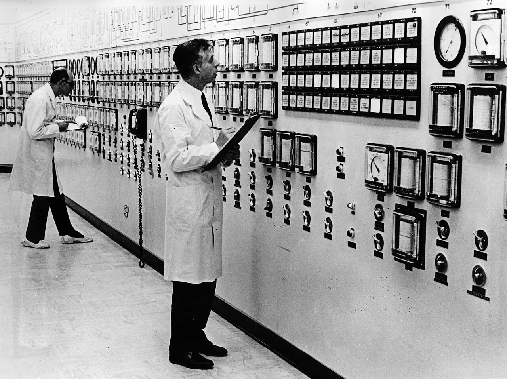
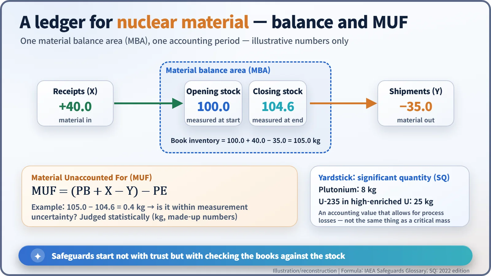
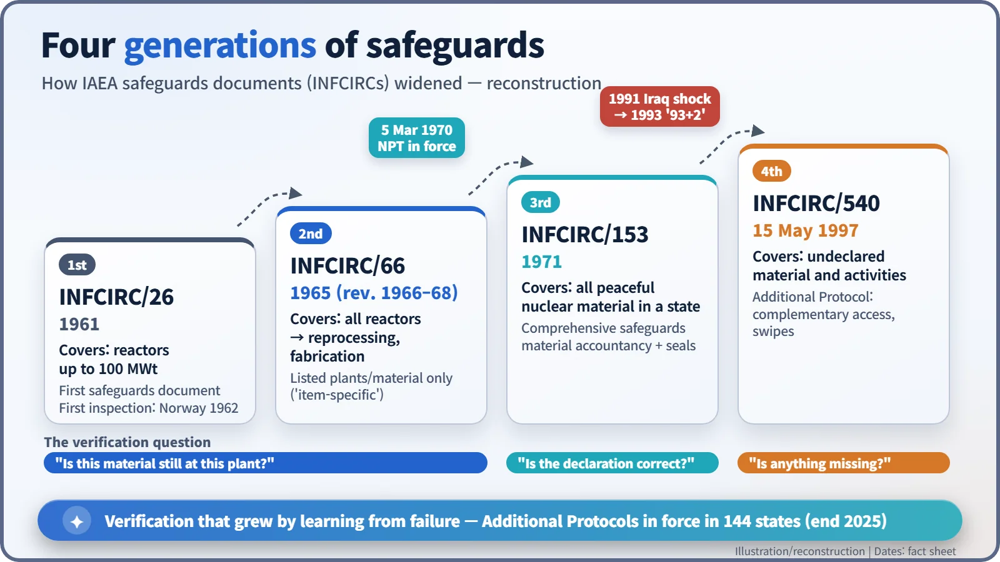

Nuclear History · 234
A Coin-Sized Seal and a Very Thick Ledger — How IAEA Safeguards Became the Audit of Nuclear Material
Seals, ledgers and the MUF: four generations of verification, each one built on the failures of the last.
IAEA safeguards began in 1961 as rules for a handful of small reactors and grew, through four generations of documents, into a system that audits a whole country's nuclear material. The 1991 discovery of Iraq's secret programme showed that checking declared material was not enough, and in 1997 the Additional Protocol shifted the question from "Is the declaration correct?" to "Is anything missing?"
A seal that anyone could break
In August 1967, at a spent-fuel reprocessing plant in West Valley, New York, a man in heavy-rimmed glasses threads a thin wire through a valve handle and crimps its ends into a metal cap no bigger than a coin. He is Georges Rubenstein, an inspector of the International Atomic Energy Agency (IAEA). The little seal is not a lock. Anyone could snap the wire. But nobody can snap it without leaving a trace, and that is the whole idea behind safeguards: make tampering visible.

An auditor, not a security guard
Safeguards are the international system for checking that nuclear material has not been diverted from peaceful use to weapons. A common misunderstanding is that the IAEA guards nuclear material. It does not: guards, fences and physical protection are each country's job. The IAEA is closer to an auditor. Just as an auditor compares a company's books with the cash actually in the safe, the Agency compares what a state has declared with what is physically there.
Generations one and two: one reactor, one item at a time
The Agency's right to apply safeguards was written into its Statute, which entered into force in 1957. The working rules came later. The first safeguards document, INFCIRC/26, appeared in 1961, and it covered only small reactors of up to 100 megawatts thermal. [1] In December 1961 the Swedish physicist Sigvard Eklund (1911–2000) became Director General, a post he would hold for twenty years while the system grew. According to the IAEA's own milestones, the first safeguards inspection took place at a research reactor in Norway in 1962.

In 1965 a new document, INFCIRC/66, extended safeguards to reactors of every size, and two revisions between 1966 and 1968 brought in reprocessing plants and fuel-fabrication plants. [1] The West Valley visit in the opening scene belongs to this period: it was the IAEA's first safeguards inspection of the reprocessing of spent fuel from a power reactor. While Rubenstein fixed seals, his colleagues Pedro Herzberg and Jacques-Jules Champion stood at the main control panels copying down readings.

There was a built-in limit, though. These were "item-specific" safeguards: inspectors looked only at the plants and material named in each agreement. Whatever lay outside the list lay outside the inspectors' view. The same kind of agreement is still used today for some facilities in states that are not party to the Non-Proliferation Treaty. [2]
Generation three: the whole country's books
The turning point was the Treaty on the Non-Proliferation of Nuclear Weapons (NPT), which entered into force on 5 March 1970. Its Article III requires every non-nuclear-weapon state party to accept IAEA safeguards on all nuclear material in its peaceful nuclear activities. To make that work, the Agency produced in 1971 a model "comprehensive safeguards agreement," INFCIRC/153. [1] The inspectors' ledger now covered a whole country, not a single plant.
The central tool is nuclear material accountancy. A plant is divided into "material balance areas." For each area and each accounting period, you take the stock measured at the start, add what came in, subtract what went out, and compare that book figure with the stock measured at the end. The gap is called MUF, for "material unaccounted for." [6] Because of measurement uncertainty and material left inside process equipment, MUF is almost never exactly zero; the question is whether it is larger than measurement error can explain, and that is judged statistically. Seals and surveillance cameras are supporting tools that keep the record continuous between counts.

The yardstick for "too much" is the significant quantity: 8 kilograms of plutonium, or 25 kilograms of uranium-235 contained in high-enriched uranium. These are accounting values that allow for unavoidable process losses. They should not be confused with a critical mass. [5]
1991: what was never in the books
The weakness of this system was exposed after the 1991 Gulf War. Iraq, a party to the NPT, had been having its declared material inspected as required. But when inspectors went in under UN Security Council Resolution 687 of 3 April 1991, they found a secret uranium-enrichment programme at sites that had never been declared, including calutrons, the electromagnetic separators first used in the Manhattan Project. Iraq was estimated to have been two or three years away from enough material for a weapon. [8] The books had balanced; the problem was everything that had never been entered in them. That year the IAEA formally found Iraq in non-compliance with its safeguards agreement. [7]
Generation four: "Is anything missing?"
Under Director General Hans Blix, the IAEA launched a strengthening effort at the end of 1993. It was nicknamed "93+2": begun in 1993, meant to finish in two years. It took longer. [3] On 15 May 1997 the Board of Governors approved the Model Additional Protocol, INFCIRC/540. [4] A state that signs one must declare far more of its nuclear fuel cycle, including related research, manufacturing and exports. Inspectors gain "complementary access" to locations they specify, and can take environmental samples over a wide area, swiping surfaces with clean cloths that are later analysed for traces of nuclear material. [2]
The question had changed from "Is the declaration correct?" to "Is the declaration complete?" The Additional Protocol has to be concluded country by country; by the end of 2025 it was in force in 144 states. [7]

Safeguards are not a perfect net. But each time a hole has been found, the mesh has been rewoven. Instead of asking the world to trust them, states show their books and their seals, and that is how a measure of international confidence has been built.